When a crippling disease shattered his lifelong ambition, Dr. Govindappa Venkataswamy chose an impossible new dream: to eliminate curable blindness. By 1976 he had personally performed over 100,000 sight-restoring surgeries. That same year he founded Aravind, an 11-bed eye clinic in south India, with no money, business plan or safety net. Dr. V (as he came to be known) was 58 years old at the time, and over the next four decades his humble clinic would defy the odds to become the largest provider of eye care in the world.
-
"Intelligence and capability are not enough. There must be the joy of doing something beautiful."- Dr. V
-
Dr. G. Venkataswamy or ‘Dr. V’ as he is affectionately called was born on October 1, 1918 in Vadamalapuram, a village 80 kms from Madurai.
He entered medical school with plans to become an Obstetrician, and in 1944 joined the Army as Medical Officer. He was discharged in 1948 after developing severe rheumatoid arthritis which left his fingers badly crippled and changed the course of his life. He could no longer hope to enter the physically rigorous field of obstetrics. Instead, he re-joined Medical College, and with determination and perseverance, he earned his Diploma and Master Degree in Ophthalmology. With a willpower and dedication far beyond the ordinary, Dr. Venkataswamy went on to personally perform over one hundred thousand successful eye surgeries.
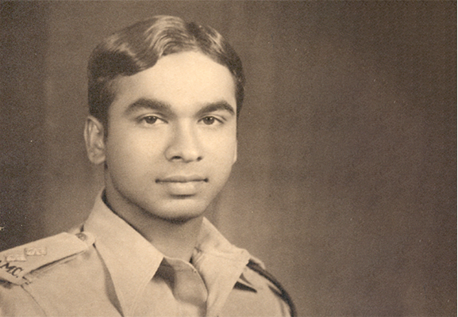
Title
Dr. V joined the Indian Army Medical Corps but had to retire in 1948 after developing rheumatoid arthritis.
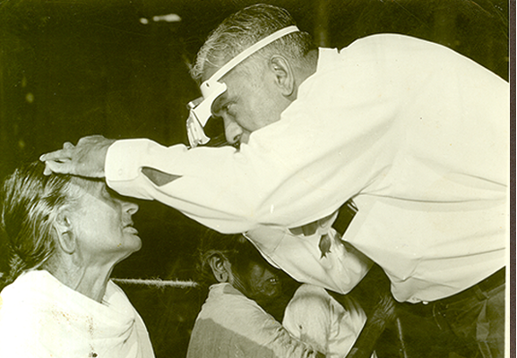
Title
Despite his condition, Dr. V returned to medical school and earned his diploma and masters degree in Ophthalmology.
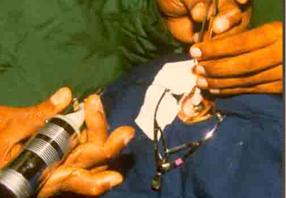
Title
With hard work and determination, Dr. V learned how to hold a scalpel and perform cataract surgery.
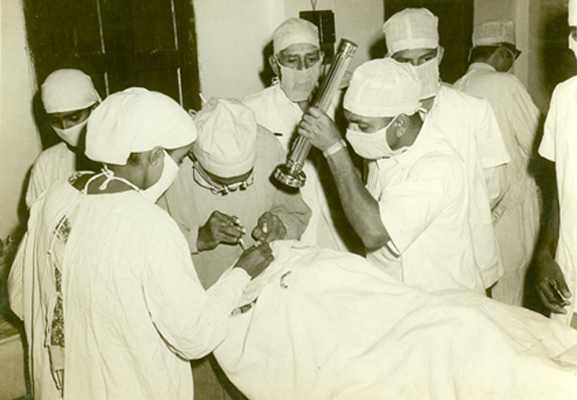
Title
Eventually, he was able to perform more than one hundred surgeries a day.
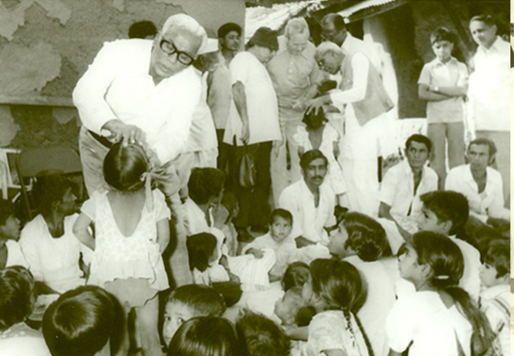
Title
During his period of government service, Dr. V introduced a number of innovative programmes to deal with the problem of blindness in India. He developed the outreach eye camp programmes
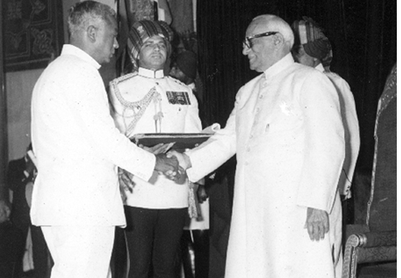
Title
In recognition of Dr. V’s work in the fight against blindness, he received the Padmashree award in 1973 by the Government of India.
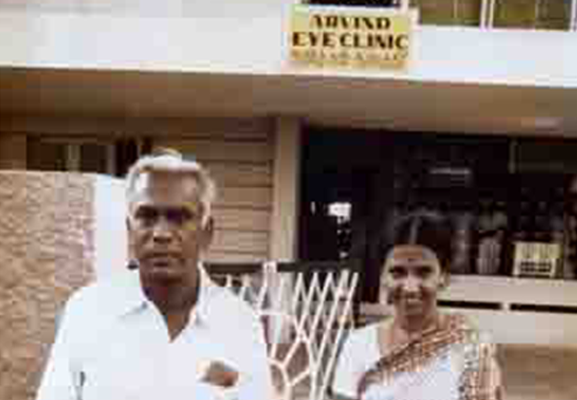
Title
In 1976, after mandatory retirement from government service at age of 58, Dr. V resolved to continue his work in eye care delivery. With support from his family, he founded Aravind Eye Hospital in Madurai , a non profit institution dedicated to providing high quality eye care to all patients who come to its door.
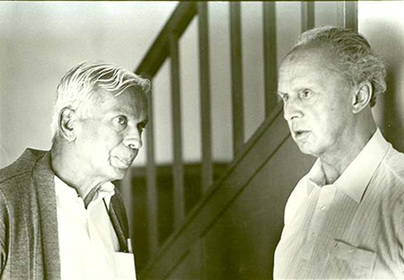
Title
Sir John Wilson, a blind man of great vision and founder of Sight Savers International, greatly influenced Dr. V and would go on to mentor him to approach eye care from a global perspective.
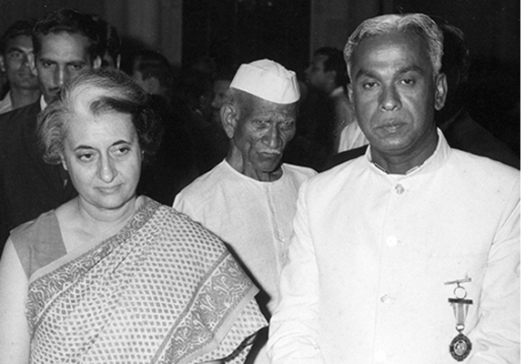
Title
Dr. V with Smt. Indira Gandhi, former Indian Prime Minister, for initiating eye care at national level
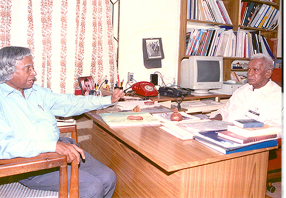
Title
In 1990, Dr. Abdul Kalam had visited Aravind as a patient when he was the Scientific Advisor to the Defense Minister and Secretary and he has described his experience at Aravind in his book ‘Ignited Minds’ – ‘In the Aravind experience, I see the path that we need to take – a transformation of life into a powerful instrument of right action’.
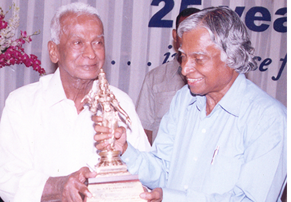
Title
Dr. Abdul Kalam made several visits to Aravind. Encouraging Aravind to adopt technology in all possible ways and pushing the research boundary.
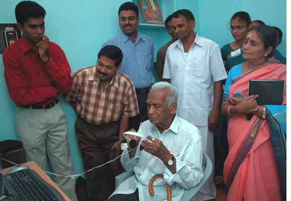
Title
Modern technology combined with spiritual consciousness is the need of the day… we want people who have a capacity for all technical skills but we also want people to grow in spiritual consciousness . . . . . that would be a wonderful thing, because then you would know and see things from a different perspective." - Dr. G. Venkataswamy
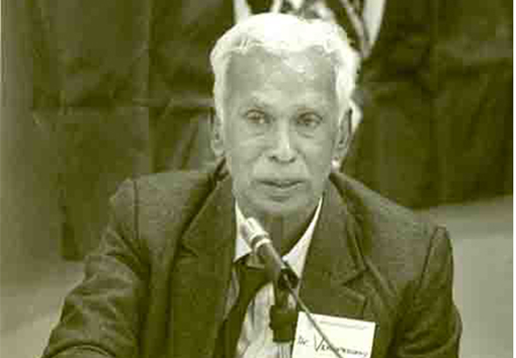
Title
In 1991, as part of the Wit lecture series, Dr. V was invited to deliver an address at the Harvard Divinity School on the theme of living a spiritual life in the contemporary age. The address entitled ‘Illuminated Spirit’, has been published and read by many people.
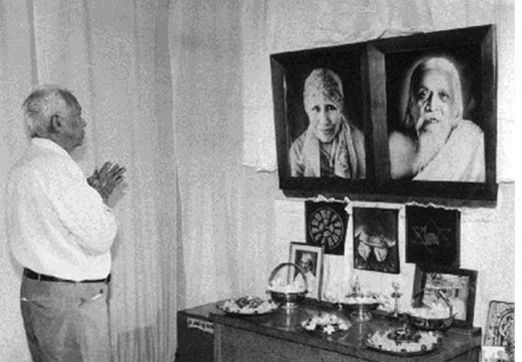
Title
Dr. V begins and ends every day at the hospital with a visit to the meditation room for ‘a silent talk with God’.
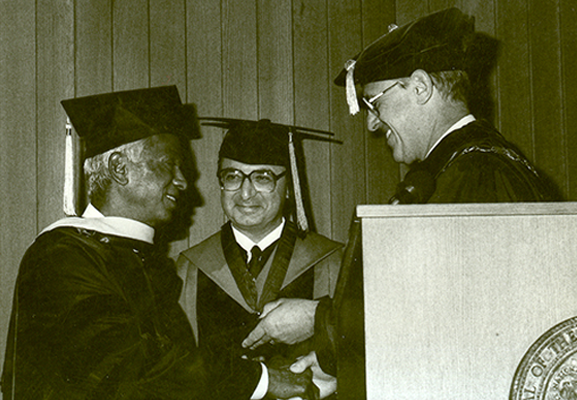
Title
Dr. V begins and ends every day at the hospital with a visit to the meditation room for ‘a silent talk with God’.
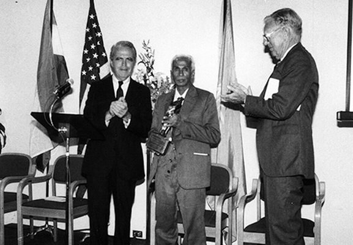
Title
“Helen Keller International Award” in honour of his pioneering works in fighting Cataract Blindness on 1987
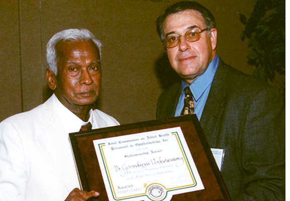
Title
“Statesmanship Award” by Joint Commission on Allied Health Personnel in Ophthalmology, Inc. USA on 1999
Title
“Medal of the Presidency of the Italian Republic” by the Pio Manzu International Research Centre at Rimini, Italy on 2002
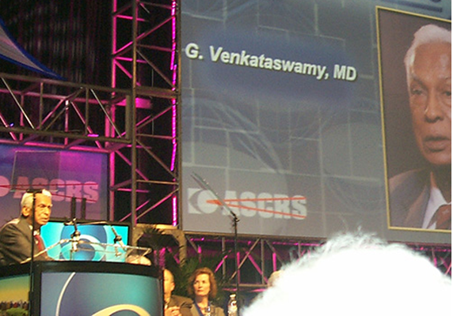
Title
“Hall of Fame” Award by American Society of Cataract and Refractive Surgery, USA on 2004
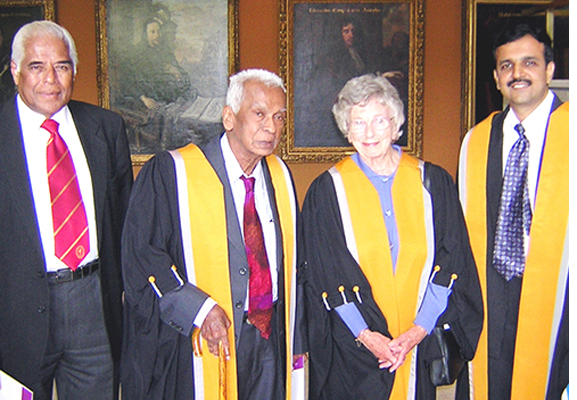
Title
“Honorary Fellowship” by the Royal College of Ophthalmologists, UK on 2004
Previous
Next
Observing Dr. V's centenary
Dr. G. Venkataswamy or ‘Dr. V’ as he is affectionately called was born on October 1, 1918 in Vadamalapuram, a village 80 kms from Madurai. He entered medical school with plans to become an Obstetrician, and in 1944 joined the Army as Medical Officer. He was discharged in 1948 after developing severe rheumatoid arthritis which left his fingers badly crippled and changed the course of his life. He could no longer hope to enter the physically rigorous field of obstetrics. Instead, he re-joined Medical College, and with determination and perseverance, he earned his Diploma and Master Degree in Ophthalmology. With a willpower and dedication far beyond the ordinary, Dr. Venkataswamy went on to personally perform over one hundred thousand successful eye surgeries. He was discharged in 1948 after developing severe rheumatoid arthritis which left his fingers badly crippled and changed the course of his life. He could no longer hope to enter the physically rigorous field of obstetrics. Instead, he re-joined Medical College, and with determination and perseverance, he earned his Diploma and Master Degree in Ophthalmology. With a willpower and dedication far beyond the ordinary, Dr. Venkataswamy went on to personally perform over one hundred thousand successful eye surgeries.